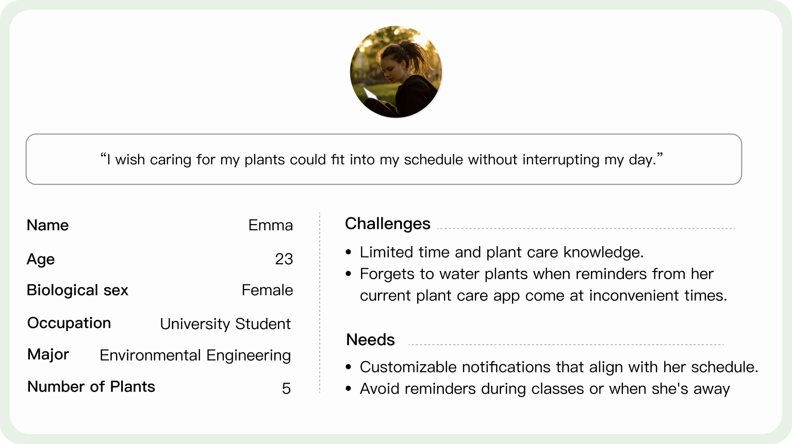
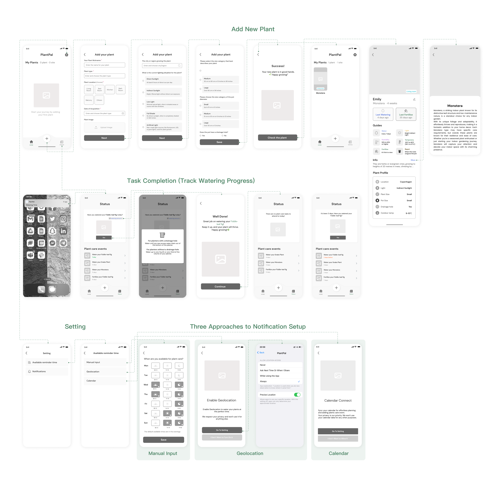
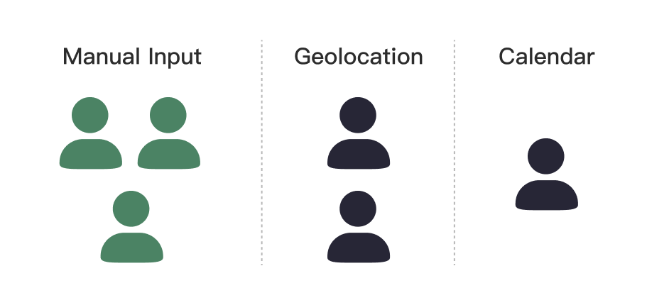
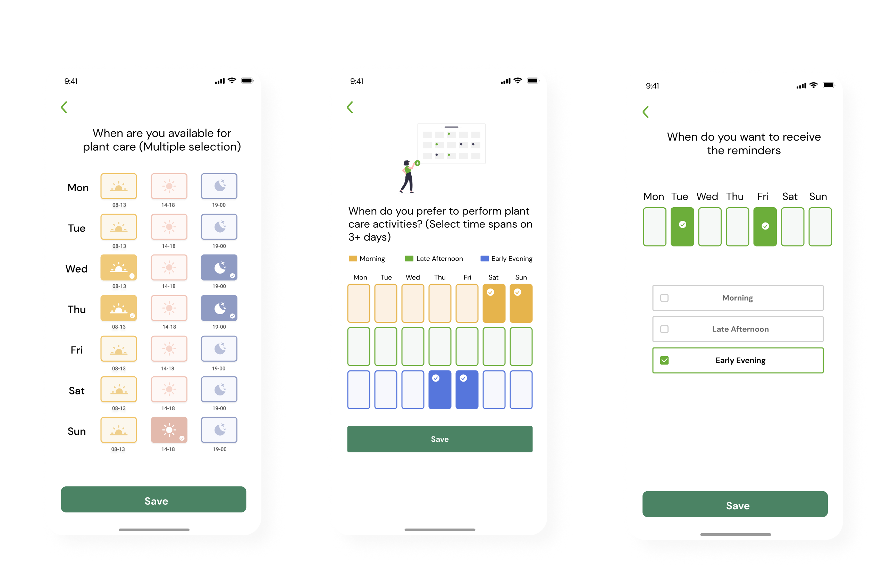

Design Process
Persona
To better understand our target users, we created a persona representing university students with busy schedules who want to care for their plants effectively.

Low-Fidelity Prototype
With the support of my teammate responsible for UX research, I, as the UX designer, developed an initial low-Fidelity Prototype for the app. It covers essential features such as customizable plant care reminders, and options for scheduling methods, including geolocation, manual input, and calendar integration.

In the wireframe, I designed three methods for scheduling notifications to fit users' routines, manual input, geolocation and calendar sync; we then conducted research to find out which method best suited user needs.
Think Aloud Testing
In this phrase, I worked with the UX researcher on our team to conduct think-aloud sessions with six users, evaluating three notification methods: Geolocation, Manual Input, and Calendar. The results showed that 4 out of 6 users preferred manual input.

Key Findings:
- Manual scheduling was the preferred method due to its ease of customization.
- Geolocation was seen as convenient but depended on location accuracy, and users expressed privacy concerns.
- Calendar reminders were less favored, as users tend not to track daily schedules with this feature.
User Testing
To optimize the user interface for manual scheduling, I designed three UI options, collaborating closely with the team. We tested each visual design, gathering participant feedback on usability, clarity, and visual appeal.

Key feedback:
- Version 1 (left): 5 out of 6 users expressed a preference for this design. Clear distribution, with flexibility in horizontal or vertical layout.
- Version 2 (middle): Users found the color legend confusing and preferred symbols over text for time slots.
- Version 3 (right): Most appreciated the simplicity and reduced clicks, but noted the lack of specific time frames and a full-week view.
Based on user preferences, we iterated towards a simpler interface with flexible scheduling options and minimal clicks to enhance usability and personalization. (shown in the next section)
User Interfaces
Based on previous research findings, I designed the user interface to align with user needs and enhance usability.